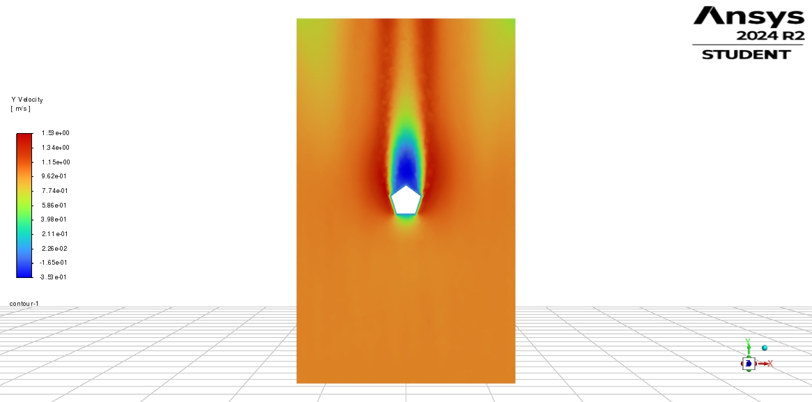
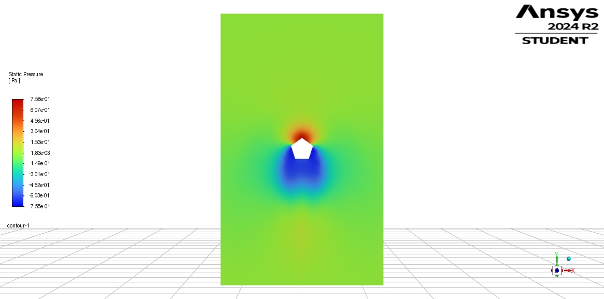

3D
Bluff Body
Pentagon Building — Crosswind Loading (3D)
Pressure vs. viscous contributions to drag at two inlet profiles (V ≈ 0.625 m/s, symmetry-plane analysis).

Domain
3D wind tunnel
Solver
ANSYS Fluent 2024 R2
Mesh
Unstructured (local refinement)
What I did
- Built a simplified pentagon-shaped building and tunnel in 3D.
- Set two inlet profiles (“Run 1” and “Run 2”) to compare wake and drag behavior.
- Post‑processed symmetry‑plane contours: y‑velocity and static pressure for each run.
- Extracted total drag and split into pressure vs. viscous terms.
Key outputs

Run 1 — y‑velocity (symmetry plane).

Run 1 — static pressure (symmetry plane).

Run 2 — y‑velocity (symmetry plane).

Run 2 — static pressure (symmetry plane).
Results (concise)
- Wake is more elongated and energetic in Run 2, increasing pressure drag dominance.
- Viscous drag is small compared with the pressure term for this bluff body, as expected.
- Contours show a compact high‑pressure zone at the windward face and a low‑pressure wake aft.
Numbers are available on request (drag breakdown per run); student version watermark retained.